Allein entwickeltes RPG-/Visual-Novel-Hybrid, entwickelt mit Python und Ren'Py.
Informatik-Absolvent (TUM)
Softwareentwickler & unabhängiger Spieleentwickler
Zeilen Gameplay-Code
Codezeilen insgesamt
Downloads
Entwicklungszeit
Harmony of the Stars ist ein storybasiertes RPG-/Visual-Novel-Hybrid, das über einen Zeitraum von rund 1,5 Jahren vollständig als Solo-Projekt entwickelt wurde.
Das Projekt erforderte die Konzeption und Implementierung zahlreicher miteinander verknüpfter Spielsysteme, darunter Beziehungsmechaniken, Welterkundung, Questverwaltung, Inventarmanagement, Charakterplanung, RPG-Fortschrittssysteme sowie ein rundenbasiertes Kampfsystem – alles innerhalb eines umfangreich erweiterten Ren'Py-Frameworks.
Neben der Softwareentwicklung umfasste das Projekt außerdem Worldbuilding, Story-Design, UI-Entwicklung, Bildbearbeitung, Animationserstellung, Kartendesign, Content-Integration, Release-Management sowie die kontinuierliche Weiterentwicklung nach der Veröffentlichung.
Dieses Portfolio konzentriert sich in erster Linie auf die technische Architektur sowie die entwickelten Gameplay-Systeme. Obwohl verschiedene Systeme weiterhin erweitert und optimiert werden, befinden sich die zugrunde liegenden Frameworks bereits im aktiven Einsatz innerhalb der veröffentlichten Version des Spiels.
Harmony of the Stars richtet sich an ein erwachsenes Publikum und enthält Inhalte für Erwachsene. Dieses Portfolio konzentriert sich ausschließlich auf die technischen, gestalterischen und entwicklungsbezogenen Aspekte des Projekts.
Wichtige technische und produktionstechnische Meilensteine des Projekts.
Eine Sammlung miteinander verknüpfter Gameplay-Systeme, die Ren'Py weit über die klassischen Funktionen eines Visual Novels hinaus erweitern. Das Projekt legt besonderen Wert auf modulare Architektur, Wartbarkeit, datengetriebene Inhalte sowie Kompatibilität zukünftiger Spielstände und Updates.
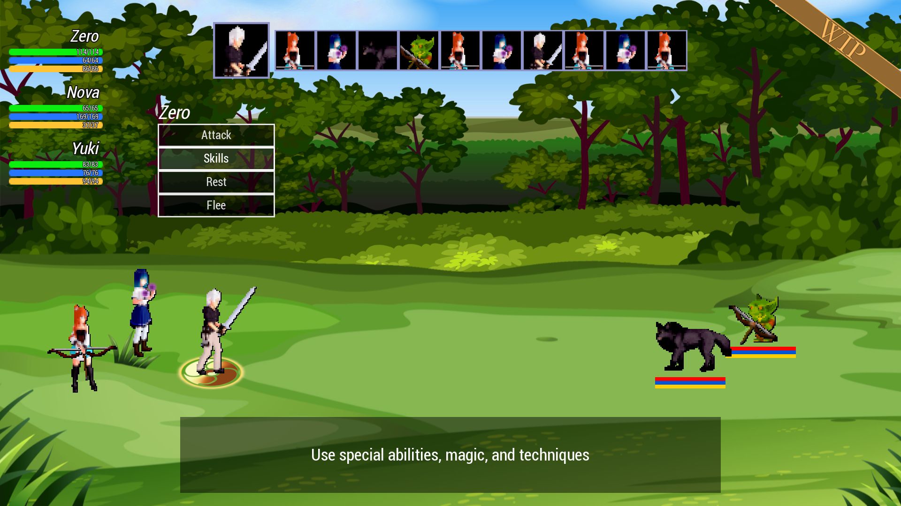
Eigenentwickeltes Kampfframework mit initiativbasierter Zugreihenfolge, Statuseffekten, Schadensberechnung, Gegner-KI, Ausrüstungsintegration, Elementaraffinitäten und komplexen Fertigkeitsinteraktionen.
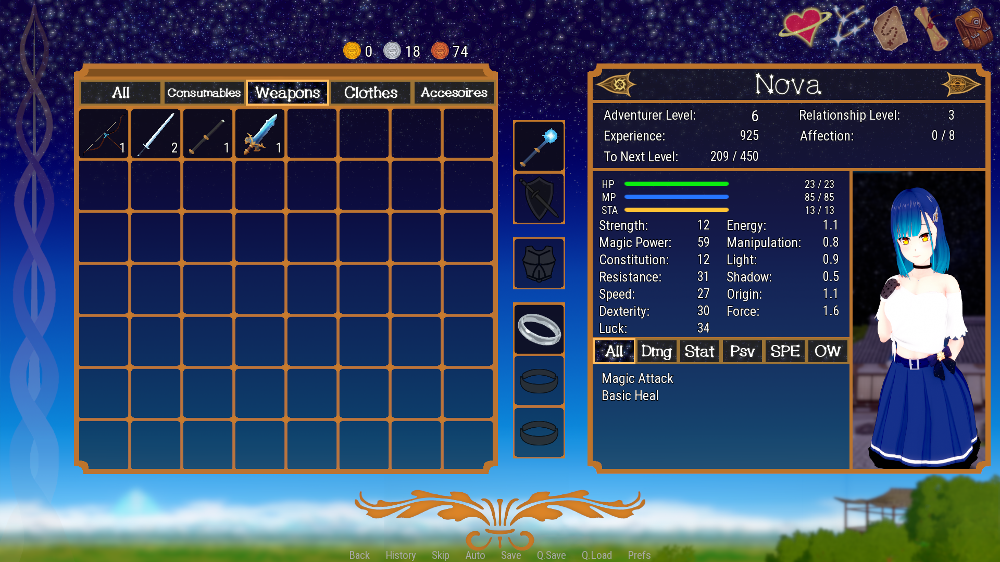
Inventararchitektur mit Unterstützung für Ausrüstungsverwaltung, Gegenstandskategorien, Charakterwerte, Verbrauchsgegenstände, Fortschrittssysteme sowie dauerhafte Speicherung des Inventars.
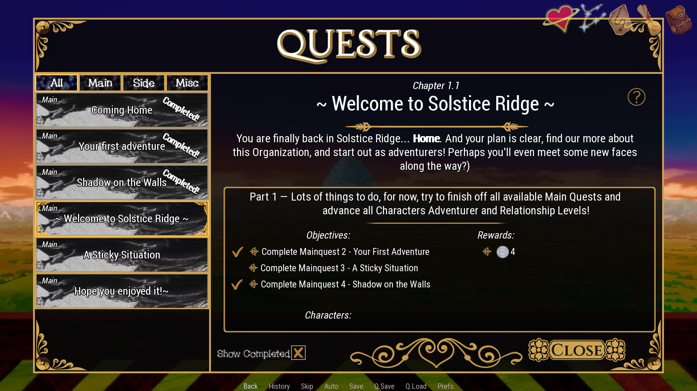
Dynamisches Questsystem mit Zielverfolgung, Belohnungen, Fortschrittsstufen, Hinweissystemen, Eventintegration und narrativem Fortschritt.
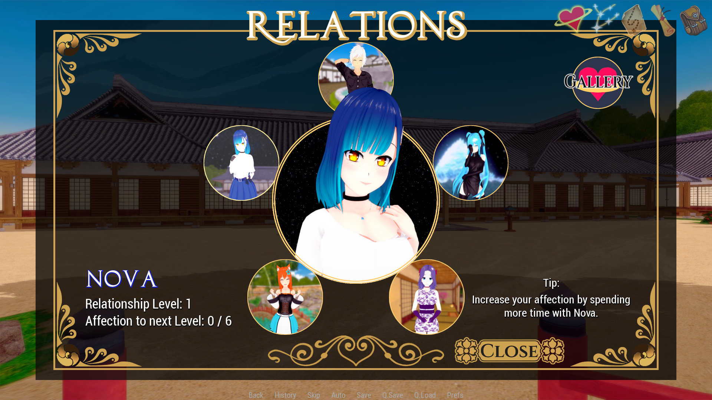
Charakterbeziehungssystem mit Zuneigungsübersicht, Fortschrittsmeilensteinen, freischaltbaren Inhalten, Eventauslösern und langfristiger Charakterentwicklung.
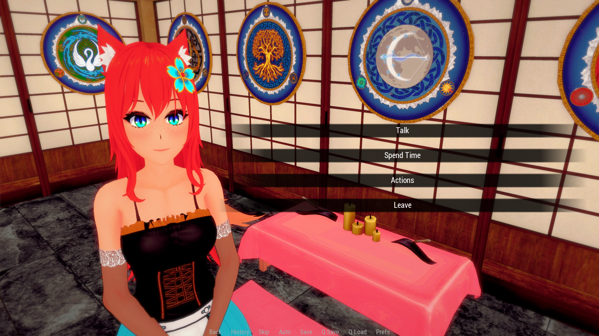
Eventsystem mit bedingten Dialogen, Beziehungsszenen, Story-Auslösern und kontextabhängigen Interaktionen auf Grundlage von Spielerentscheidungen, Beziehungswerten und Weltzustand.
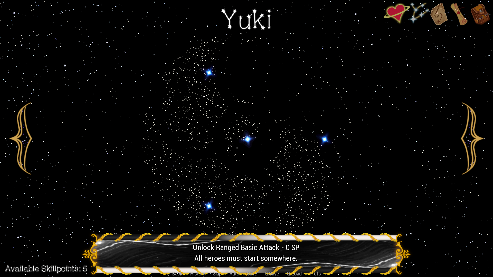
Charakterspezifische Entwicklungssysteme mit freischaltbaren Fähigkeiten, verzweigten Entwicklungspfaden und langfristigem RPG-Fortschritt.
Die Erkundung erfolgt über mehrere Navigationsebenen und ermöglicht den Wechsel zwischen Regionen, Städten, Orten, Dungeons, Ereignissen und Charakterinteraktionen, während Spielfortschritt und Weltzustand jederzeit erhalten bleiben.
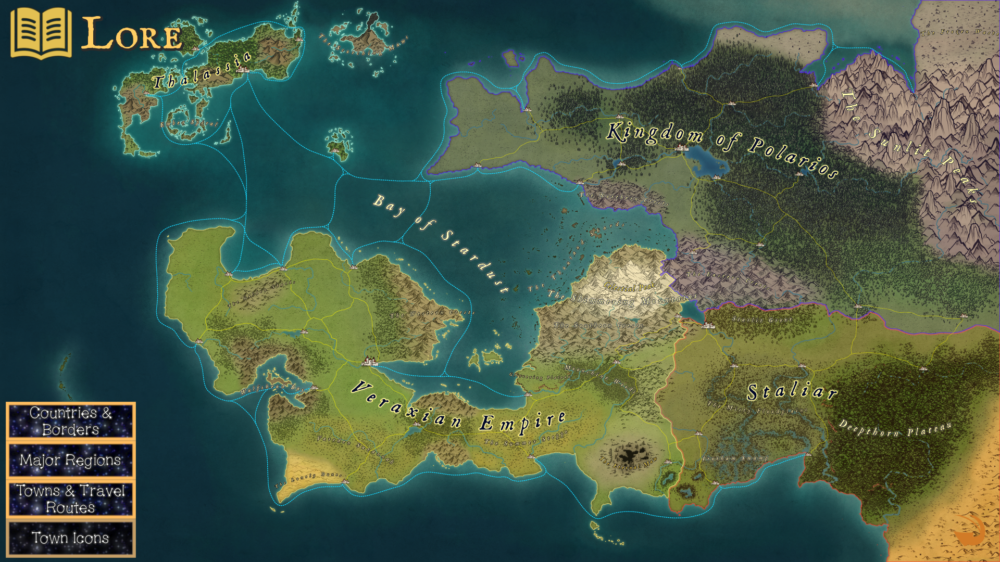
Interaktive Weltdatenbank mit Regionen, Städten, geografischen Informationen, Fraktionen und freischaltbaren Lore-Einträgen, die direkt in das Erkundungssystem integriert sind.
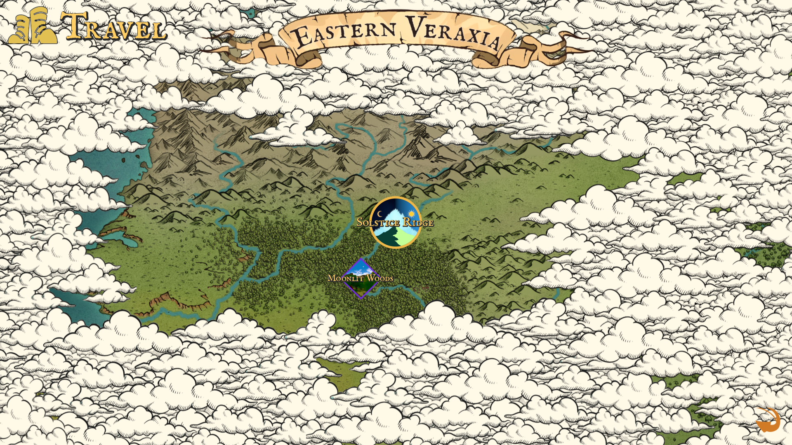
Großräumiges Erkundungssystem zur Verbindung verschiedener Regionen, Storypfade, entdeckbarer Orte und zukünftiger Inhalte.

Stadterkundungssystem für Events, Quests, Charakterbegegnungen, Fortschrittsverfolgung und Interaktionen mit der Spielwelt.
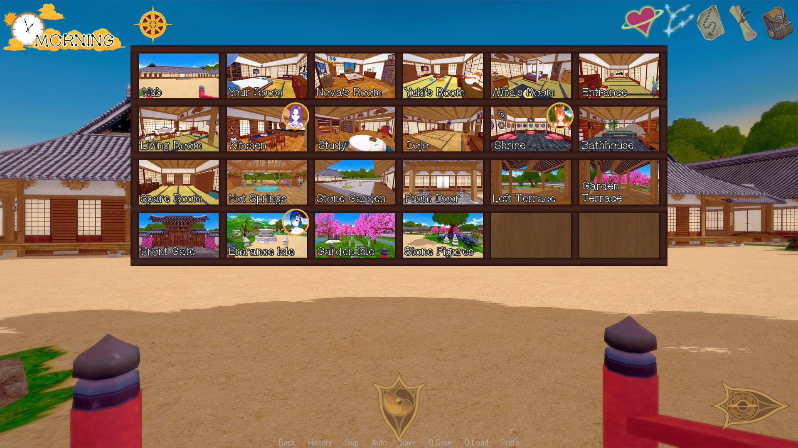
Schnellreise- und Navigationssystem für Spieleraktivitäten, Storyereignisse, Erkundung und Charakterplanung.
Über die Gameplay-Systeme hinaus bietet Harmony of the Stars eine eigenständige Fantasywelt mit mehreren Handlungssträngen, Charakterbeziehungen, Nebeninhalten sowie einer langfristigen Storyentwicklung, die eng mit den Spielmechaniken verknüpft ist.
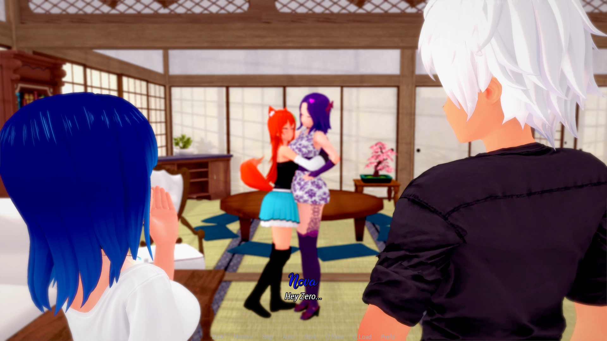
Eigenständige Handlung, Charaktere und Storyentwicklung auf Grundlage eines konsistenten Regelwerks für Welt und Figuren. Zentrale Ereignisse, Beziehungen und Charakterentwicklungen greifen ineinander, um eine durchgehend schlüssige Erzählstruktur zu gewährleisten.

Entwicklung miteinander verknüpfter Regeln für Magie, Gottheiten, Machtentwicklung und kosmologische Strukturen. Diese Systeme bilden eine konsistente Grundlage für Storytelling, Worldbuilding, Gameplay-Mechaniken und Charakterentwicklung.
Neben der Softwareentwicklung erforderte das Projekt umfangreiche Content-Produktion, darunter Worldbuilding, Kartenerstellung, visuelles Design, Animationserstellung, Bildbearbeitung, UI-Design sowie die Integration sämtlicher Inhalte.
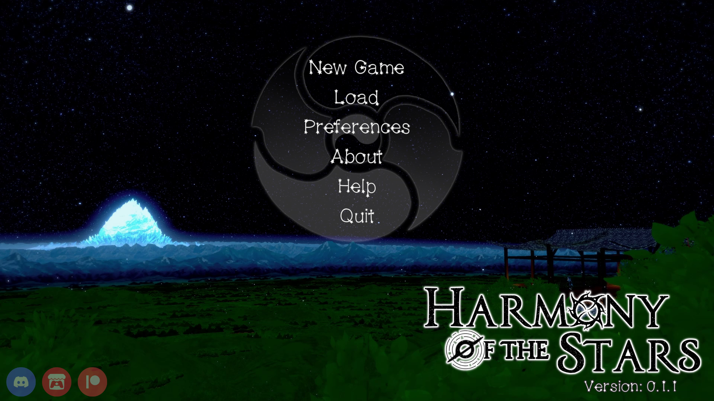
Konzeption und Umsetzung der visuellen Präsentation des Spiels einschließlich Benutzeroberfläche, Branding, Menüs und der gesamten Spielererfahrung.
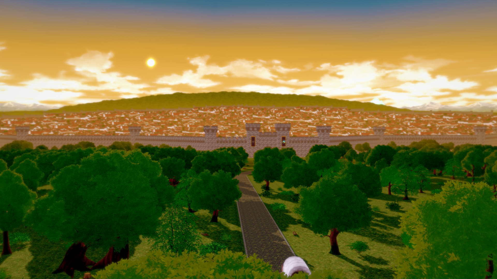
Entwicklung einer eigenständigen Fantasywelt mit Nationen, Orten, Lore, Geschichte, Charakteren, Progressionsstruktur und narrativem Gesamtkonzept.
Falls Sie Fragen zum Projekt, seiner technischen Architektur, dem Entwicklungsprozess oder zu meiner Qualifikation für eine Position haben, freue ich mich darauf, Ihnen weitere Informationen zur Verfügung zu stellen.